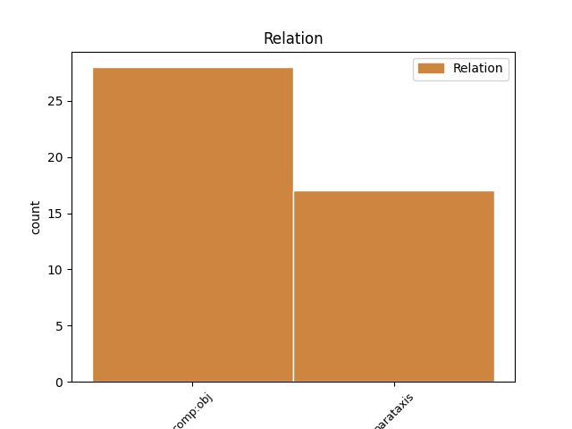
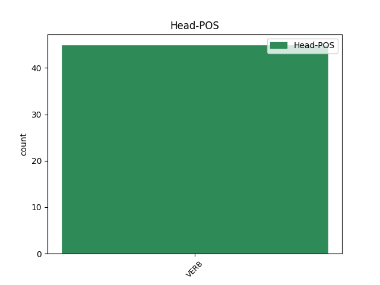

Distribution of features within this leaf


Agreement Rules sorted by frequency.
- When the dependent token is the direct object complements(comp:obj) of the head token, and the head token is VERB and the dependent token is VERB.
1 ' _ _ _ _ 0 _ _ _
2 Tosnóidh tosnaigh VERB VTI Mood=Ind|Tense=Fut 16 comp:obj _ _
3 an _ _ _ _ 0 _ _ _
4 Pharáid _ _ _ _ 0 _ _ _
5 ag _ _ _ _ 0 _ _ _
6 an _ _ _ _ 0 _ _ _
7 Ospidéal _ _ _ _ 0 _ _ _
8 agus _ _ _ _ 0 _ _ _
9 tabharfaidh _ _ _ _ 0 _ _ _
10 sí _ _ _ _ 0 _ _ _
11 cuairt _ _ _ _ 0 _ _ _
12 an _ _ _ _ 0 _ _ _
13 bhaile _ _ _ _ 0 _ _ _
14 ' _ _ _ _ 0 _ _ _
15 , _ _ _ _ 0 _ _ _
16 arsa arsa VERB PastInd Mood=Ind|Tense=Past 0 _ _ _
17 Feargus _ _ _ _ 0 _ _ _
18 ó _ _ _ _ 0 _ _ _
19 Flatharta _ _ _ _ 0 _ _ _
20 , _ _ _ _ 0 _ _ _
21 le _ _ _ _ 0 _ _ _
22 Foinse _ _ _ _ 0 _ _ _
23 . _ _ _ _ 0 _ _ _
1 dhá _ _ _ _ 0 _ _ _
2 chill _ _ _ _ 0 _ _ _
3 leictreacha _ _ _ _ 0 _ _ _
4 nó _ _ _ _ 0 _ _ _
5 níos _ _ _ _ 0 _ _ _
6 mó _ _ _ _ 0 _ _ _
7 a _ _ _ _ 0 _ _ _
8 tháirgeann _ _ _ _ 0 _ _ _
9 leictreachas _ _ _ _ 0 _ _ _
10 ; _ _ _ _ 0 _ _ _
11 tarlaíonn tarlaigh VERB VTI Mood=Ind|Tense=Pres 0 _ _ _
12 sé _ _ _ _ 0 _ _ _
13 seo _ _ _ _ 0 _ _ _
14 nuair _ _ _ _ 0 _ _ _
15 a _ _ _ _ 0 _ _ _
16 imoibríonn _ _ _ _ 0 _ _ _
17 na _ _ _ _ 0 _ _ _
18 ceimiceáin _ _ _ _ 0 _ _ _
19 laistigh _ _ _ _ 0 _ _ _
20 den _ _ _ _ 0 _ _ _
21 chadhnra _ _ _ _ 0 _ _ _
22 ar _ _ _ _ 0 _ _ _
23 a _ _ _ _ 0 _ _ _
24 chéile _ _ _ _ 0 _ _ _
25 ; _ _ _ _ 0 _ _ _
26 braitheann braith VERB VTI Mood=Ind|Tense=Pres 11 parataxis _ _
27 vóltas _ _ _ _ 0 _ _ _
28 cadhnra _ _ _ _ 0 _ _ _
29 ar _ _ _ _ 0 _ _ _
30 líon _ _ _ _ 0 _ _ _
31 na _ _ _ _ 0 _ _ _
32 gcill _ _ _ _ 0 _ _ _
33 a _ _ _ _ 0 _ _ _
34 bhíonn _ _ _ _ 0 _ _ _
35 ann _ _ _ _ 0 _ _ _
36 : _ _ _ _ 0 _ _ _
37 dá _ _ _ _ 0 _ _ _
38 mhéid _ _ _ _ 0 _ _ _
39 cill _ _ _ _ 0 _ _ _
40 is _ _ _ _ 0 _ _ _
41 ea _ _ _ _ 0 _ _ _
42 is _ _ _ _ 0 _ _ _
43 mó _ _ _ _ 0 _ _ _
44 an _ _ _ _ 0 _ _ _
45 vóltas _ _ _ _ 0 _ _ _
46 carbaihiodráití _ _ _ _ 0 _ _ _
47 . _ _ _ _ 0 _ _ _
Disagree Examples:
1 Laistigh _ _ _ _ 0 _ _ _
2 de _ _ _ _ 0 _ _ _
3 bhalla _ _ _ _ 0 _ _ _
4 cois _ _ _ _ 0 _ _ _
5 bóthair _ _ _ _ 0 _ _ _
6 ar _ _ _ _ 0 _ _ _
7 fhearann _ _ _ _ 0 _ _ _
8 na _ _ _ _ 0 _ _ _
9 heaglaise _ _ _ _ 0 _ _ _
10 a _ _ _ _ 0 _ _ _
11 raibh _ _ _ _ 0 _ _ _
12 athair _ _ _ _ 0 _ _ _
13 Dhúbhglais _ _ _ _ 0 _ _ _
14 de _ _ _ _ 0 _ _ _
15 h-Íde _ _ _ _ 0 _ _ _
16 ina _ _ _ _ 0 _ _ _
17 mhinistéir _ _ _ _ 0 _ _ _
18 inti _ _ _ _ 0 _ _ _
19 ar _ _ _ _ 0 _ _ _
20 an _ _ _ _ 0 _ _ _
21 Phortach _ _ _ _ 0 _ _ _
22 Ard _ _ _ _ 0 _ _ _
23 tá _ _ _ _ 0 _ _ _
24 fógra _ _ _ _ 0 _ _ _
25 anois _ _ _ _ 0 _ _ _
26 : _ _ _ _ 0 _ _ _
27 ' _ _ _ _ 0 _ _ _
28 Ceiliúrlann _ _ _ _ 0 _ _ _
29 an _ _ _ _ 0 _ _ _
30 Chraoibhín _ _ _ _ 0 _ _ _
31 / _ _ _ _ 0 _ _ _
32 Dr _ _ _ _ 0 _ _ _
33 Douglas _ _ _ _ 0 _ _ _
34 Hyde _ _ _ _ 0 _ _ _
35 Centre _ _ _ _ 0 _ _ _
36 ar _ _ _ _ 0 _ _ _
37 oscailt _ _ _ _ 0 _ _ _
38 / _ _ _ _ 0 _ _ _
39 open _ _ _ _ 0 _ _ _
40 Bealtaine _ _ _ _ 0 _ _ _
41 - _ _ _ _ 0 _ _ _
42 Meán _ _ _ _ 0 _ _ _
43 Fómhair _ _ _ _ 0 _ _ _
44 / _ _ _ _ 0 _ _ _
45 May _ _ _ _ 0 _ _ _
46 - _ _ _ _ 0 _ _ _
47 September _ _ _ _ 0 _ _ _
48 ... _ _ _ _ 0 _ _ _
49 ' _ _ _ _ 0 _ _ _
50 Tá bí VERB PresInd Mood=Ind|Tense=Pres 0 _ _ _
51 an _ _ _ _ 0 _ _ _
52 t-údar _ _ _ _ 0 _ _ _
53 agus _ _ _ _ 0 _ _ _
54 An _ _ _ _ 0 _ _ _
55 Gúm _ _ _ _ 0 _ _ _
56 le _ _ _ _ 0 _ _ _
57 moladh _ _ _ _ 0 _ _ _
58 as _ _ _ _ 0 _ _ _
59 tabhairt _ _ _ _ 0 _ _ _
60 faoina _ _ _ _ 0 _ _ _
61 leithéid _ _ _ _ 0 _ _ _
62 d' _ _ _ _ 0 _ _ _
63 áis _ _ _ _ 0 _ _ _
64 a _ _ _ _ 0 _ _ _
65 chur _ _ _ _ 0 _ _ _
66 ar _ _ _ _ 0 _ _ _
67 fáil _ _ _ _ 0 _ _ _
68 - _ _ _ _ 0 _ _ _
69 thiocfadh tar VERB VI Form=Len|Mood=Cnd 50 parataxis _ _
70 gurbh _ _ _ _ 0 _ _ _
71 é _ _ _ _ 0 _ _ _
72 seo _ _ _ _ 0 _ _ _
73 an _ _ _ _ 0 _ _ _
74 chéad _ _ _ _ 0 _ _ _
75 chéim _ _ _ _ 0 _ _ _
76 i _ _ _ _ 0 _ _ _
77 dtreo _ _ _ _ 0 _ _ _
78 ciclipéid _ _ _ _ 0 _ _ _
79 eolaíochta _ _ _ _ 0 _ _ _
80 as _ _ _ _ 0 _ _ _
81 Gaeilge _ _ _ _ 0 _ _ _
1 Dar dar VERB PresInd Mood=Ind|Tense=Pres 0 _ _ _
2 leo _ _ _ _ 0 _ _ _
3 , _ _ _ _ 0 _ _ _
4 sa _ _ _ _ 0 _ _ _
5 chás _ _ _ _ 0 _ _ _
6 seo _ _ _ _ 0 _ _ _
7 , _ _ _ _ 0 _ _ _
8 bheidís bí VERB Cond Form=Len|Mood=Cnd|Number=Plur|Person=3 1 comp:obj _ _
9 ag _ _ _ _ 0 _ _ _
10 géilleadh _ _ _ _ 0 _ _ _
11 an _ _ _ _ 0 _ _ _
12 iomarca _ _ _ _ 0 _ _ _
13 dá _ _ _ _ 0 _ _ _
14 neamhspleáchas _ _ _ _ 0 _ _ _
15 náisiúnta _ _ _ _ 0 _ _ _
16 don _ _ _ _ 0 _ _ _
17 Aontas _ _ _ _ 0 _ _ _
18 . _ _ _ _ 0 _ _ _
1 Sheoladar Sheoladar VERB PastInd Form=Len|Mood=Ind|Number=Plur|Person=3|Tense=Past 0 _ _ _
2 an _ _ _ _ 0 _ _ _
3 cóta _ _ _ _ 0 _ _ _
4 leis _ _ _ _ 0 _ _ _
5 na _ _ _ _ 0 _ _ _
6 muinchillí _ _ _ _ 0 _ _ _
7 fada _ _ _ _ 0 _ _ _
8 ar _ _ _ _ 0 _ _ _
9 ais _ _ _ _ 0 _ _ _
10 le _ _ _ _ 0 _ _ _
11 tabhairt _ _ _ _ 0 _ _ _
12 dá _ _ _ _ 0 _ _ _
13 n-athair _ _ _ _ 0 _ _ _
14 , _ _ _ _ 0 _ _ _
15 leis _ _ _ _ 0 _ _ _
16 an _ _ _ _ 0 _ _ _
17 teachtaireacht _ _ _ _ 0 _ _ _
18 : _ _ _ _ 0 _ _ _
19 ' _ _ _ _ 0 _ _ _
20 Fuaireamar _ _ _ _ 0 _ _ _
21 é _ _ _ _ 0 _ _ _
22 seo _ _ _ _ 0 _ _ _
23 ; _ _ _ _ 0 _ _ _
24 féach féach VERB Imper Mood=Imp|Number=Sing|Person=2 1 parataxis _ _
25 an _ _ _ _ 0 _ _ _
26 é _ _ _ _ 0 _ _ _
27 cóta _ _ _ _ 0 _ _ _
28 do _ _ _ _ 0 _ _ _
29 mhic _ _ _ _ 0 _ _ _
30 é _ _ _ _ 0 _ _ _
31 nó _ _ _ _ 0 _ _ _
32 nach _ _ _ _ 0 _ _ _
33 é _ _ _ _ 0 _ _ _
34 . _ _ _ _ 0 _ _ _
1 Fágann fág VERB VTI Mood=Ind|Tense=Pres 0 _ _ _
2 siad _ _ _ _ 0 _ _ _
3 scoilt _ _ _ _ 0 _ _ _
4 agus _ _ _ _ 0 _ _ _
5 cogadh _ _ _ _ 0 _ _ _
6 ina _ _ _ _ 0 _ _ _
7 ndiaidh _ _ _ _ 0 _ _ _
8 chun _ _ _ _ 0 _ _ _
9 go _ _ _ _ 0 _ _ _
10 mbeidh _ _ _ _ 0 _ _ _
11 siad _ _ _ _ 0 _ _ _
12 ábalta _ _ _ _ 0 _ _ _
13 a _ _ _ _ 0 _ _ _
14 rá _ _ _ _ 0 _ _ _
15 lena _ _ _ _ 0 _ _ _
16 bpobal _ _ _ _ 0 _ _ _
17 féin _ _ _ _ 0 _ _ _
18 : _ _ _ _ 0 _ _ _
19 féach féach VERB VTI Mood=Imp|Number=Sing|Person=2 1 parataxis _ SpaceAfter=No
20 , _ _ _ _ 0 _ _ _
21 nach _ _ _ _ 0 _ _ _
22 maith _ _ _ _ 0 _ _ _
23 an _ _ _ _ 0 _ _ _
24 rud _ _ _ _ 0 _ _ _
25 é _ _ _ _ 0 _ _ _
26 go _ _ _ _ 0 _ _ _
27 bhfuilimid _ _ _ _ 0 _ _ _
28 amach _ _ _ _ 0 _ _ _
29 as _ _ _ _ 0 _ _ _
30 sin _ _ _ _ 0 _ _ _
31 . _ _ _ _ 0 _ _ _
1 Deir _ _ _ _ 0 _ _ _
2 Bernard _ _ _ _ 0 _ _ _
3 ( _ _ _ _ 0 _ _ _
4 1971 _ _ _ _ 0 _ _ _
5 ) _ _ _ _ 0 _ _ _
6 go _ _ _ _ 0 _ _ _
7 gcaithfear _ _ _ _ 0 _ _ _
8 an _ _ _ _ 0 _ _ _
9 saghas _ _ _ _ 0 _ _ _
10 seo _ _ _ _ 0 _ _ _
11 claonta _ _ _ _ 0 _ _ _
12 a _ _ _ _ 0 _ _ _
13 áireamh _ _ _ _ 0 _ _ _
14 mar _ _ _ _ 0 _ _ _
15 shampla _ _ _ _ 0 _ _ _
16 den _ _ _ _ 0 _ _ _
17 ' _ _ _ _ 0 _ _ _
18 ghnéasachas _ _ _ _ 0 _ _ _
19 ' _ _ _ _ 0 _ _ _
20 : _ _ _ _ 0 _ _ _
21 Agus _ _ _ _ 0 _ _ _
22 chomh _ _ _ _ 0 _ _ _
23 fada _ _ _ _ 0 _ _ _
24 is _ _ _ _ 0 _ _ _
25 a _ _ _ _ 0 _ _ _
26 bhaineann bain VERB VTI Form=Len|Mood=Ind|Tense=Pres 0 _ _ _
27 leis _ _ _ _ 0 _ _ _
28 an _ _ _ _ 0 _ _ _
29 saghas _ _ _ _ 0 _ _ _
30 ábhair _ _ _ _ 0 _ _ _
31 a _ _ _ _ 0 _ _ _
32 raibh _ _ _ _ 0 _ _ _
33 meas _ _ _ _ 0 _ _ _
34 ag _ _ _ _ 0 _ _ _
35 an _ _ _ _ 0 _ _ _
36 bpobal _ _ _ _ 0 _ _ _
37 agus _ _ _ _ 0 _ _ _
38 ag _ _ _ _ 0 _ _ _
39 scoláirí _ _ _ _ 0 _ _ _
40 béaloidis _ _ _ _ 0 _ _ _
41 air _ _ _ _ 0 _ _ _
42 : _ _ _ _ 0 _ _ _
43 Bheadh bí VERB Cond Form=Len|Mood=Cnd 26 parataxis _ _
44 sé _ _ _ _ 0 _ _ _
45 tábhachtach _ _ _ _ 0 _ _ _
46 , _ _ _ _ 0 _ _ _
47 mar _ _ _ _ 0 _ _ _
48 sin _ _ _ _ 0 _ _ _
49 , _ _ _ _ 0 _ _ _
50 ceist _ _ _ _ 0 _ _ _
51 a _ _ _ _ 0 _ _ _
52 chur _ _ _ _ 0 _ _ _
53 mar _ _ _ _ 0 _ _ _
54 gheall _ _ _ _ 0 _ _ _
55 ar _ _ _ _ 0 _ _ _
56 an _ _ _ _ 0 _ _ _
57 dearcadh _ _ _ _ 0 _ _ _
58 i _ _ _ _ 0 _ _ _
59 leith _ _ _ _ 0 _ _ _
60 na _ _ _ _ 0 _ _ _
61 mban _ _ _ _ 0 _ _ _
62 a _ _ _ _ 0 _ _ _
63 bhí _ _ _ _ 0 _ _ _
64 le _ _ _ _ 0 _ _ _
65 feiscint _ _ _ _ 0 _ _ _
66 i _ _ _ _ 0 _ _ _
67 scoláireacht _ _ _ _ 0 _ _ _
68 an _ _ _ _ 0 _ _ _
69 bhéaloidis _ _ _ _ 0 _ _ _
70 san _ _ _ _ 0 _ _ _
71 am _ _ _ _ 0 _ _ _
72 atá _ _ _ _ 0 _ _ _
73 thart _ _ _ _ 0 _ _ _
74 : _ _ _ _ 0 _ _ _
75 . _ _ _ _ 0 _ _ _